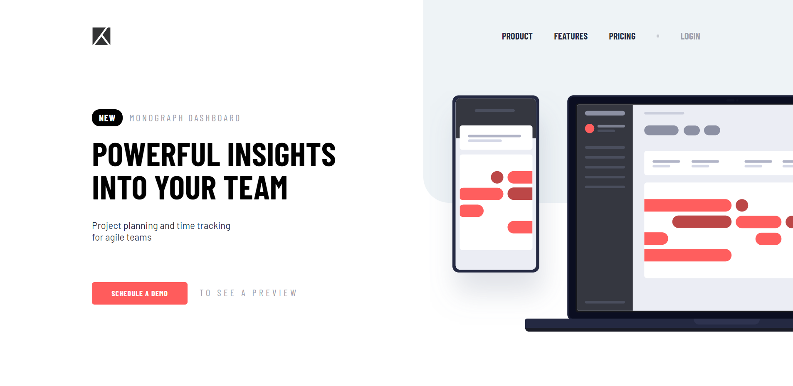
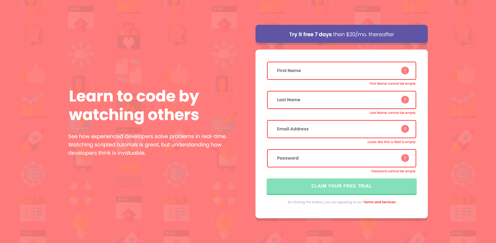
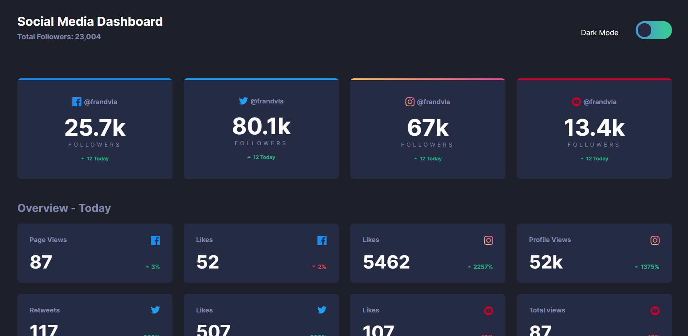
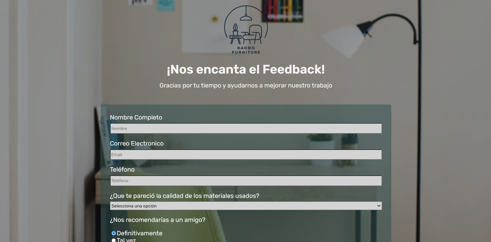
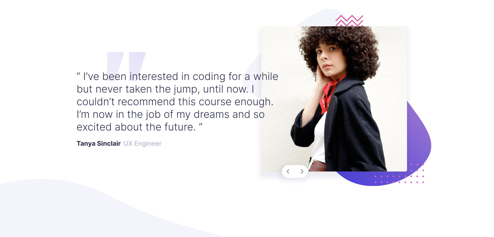
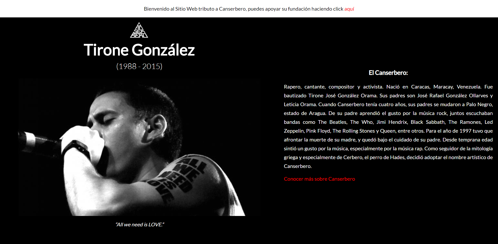

Hola, ¡hagamos algo grandioso!
Proyectos Recientes

Responsive Layout - SASS

Client Side Validation JS

Dashboard - Dark Mode Switch

Satisfaction Survey

Testimonials Slider

Tribute Page
Más información sobre ellos click aquí
Sobre Mi
Mi nombre es Francisco Dávila, un desarrollador web dedicado al front-end. Me especializo en crear Aplicaciones web de tipo SPA usando React como framework.